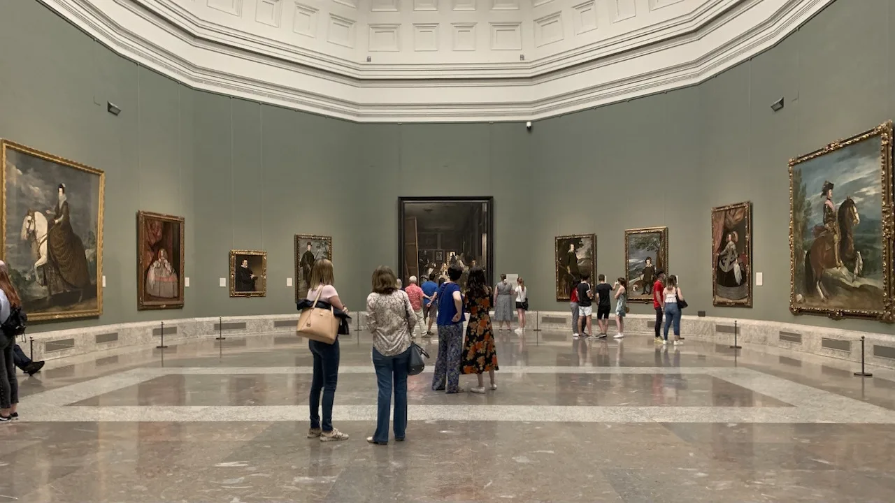
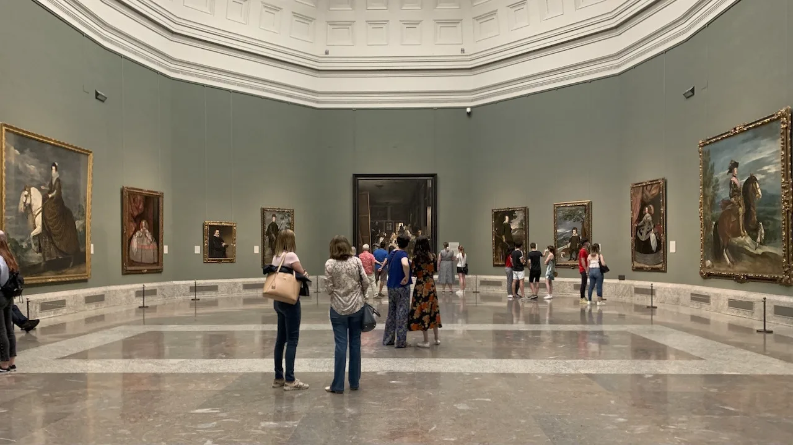

MADRID
Madrid, capital de España, es una ciudad dinámica que combina historia, cultura y modernidad. Alberga importantes museos como el Prado y el Reina Sofía, además de emblemáticos lugares como la Puerta del Sol y el Palacio Real. Sus calles están llenas de vida, con terrazas, bares y una vibrante vida nocturna. Es también un centro político, económico y cultural clave del país. Madrid destaca por su hospitalidad, su gastronomía y su carácter acogedor.
Ubicación:
-
Sitios de interés:
-

Museo del Prado
Uno de los museos de arte más importantes del mundo. Alberga obras maestras de Velázquez, Goya, El Bosco, Rubens y muchos más. Es un verdadero tesoro para los amantes del arte. -
Palacio Real
Es la residencia oficial del rey de España (aunque solo se usa para ceremonias). Puedes visitar su interior y admirar los salones reales, la armería y sus impresionantes vistas a los jardines de Sabatini. -
Plaza Mayor
Una plaza histórica y pintoresca rodeada de edificios con soportales. Ha sido escenario de mercados, celebraciones y ejecuciones públicas. Hoy es un lugar perfecto para tomar algo y disfrutar del ambiente madrileño. -

Gran Vía
Es la avenida más famosa de Madrid, llena de tiendas, teatros, restaurantes y edificios históricos. Ideal para pasear de día y disfrutar de la iluminación y el ambiente por la noche. -

Santiago Bernabéu
El hogar del Real Madrid, uno de los clubes de fútbol más grandes y exitosos del mundo. Situado en pleno Paseo de la Castellana, el Bernabéu es mucho más que un estadio: es un símbolo de la pasión deportiva y de la historia del fútbol mundial.
-

Horario:
- Lunes a sábado: 10:00 - 20:00 h
- Domingos y festivos: 10:00 - 19:00 h
Horario:
- De octubre a marzo: 10:00 - 18:00 h
- De abril a septiembre: 10:00 - 19:00 h
- Domingos: 10:00 - 16:00 h
Horario:
- Abierto siempre
Horario:
- Abierto siempre
Horario:
- Todos los días: 10:00 - 18:00 h
- Día de partido: Cerrado